Contexto del proyecto
El Departamento de Ingeniería en Telecomunicaciones del Instituto Balseiro desarrolla una estación terrena basada en arreglos de antenas para recepción de señales de satélites de órbita baja. El sistema actual cuenta con dos cadenas de recepción completas, y el proyecto consistió en agregar dos canales adicionales para duplicar su capacidad.
Esta práctica profesional supervisada la desarrollamos en equipo de dos personas ocupandonos con la implementación: fabricación de los circuitos impresos, soldadura de componentes SMD, armado de cableado, montaje final y caracterización experimental de los módulos.
Fabricación de los circuitos impresos
El primer paso fue imprimir las cuatro placas necesarias para el sistema: dos LNA y dos PA. Todas son de FR4 doble faz.
El proceso de impresión siguió la técnica de insolado UV y revelado químico y los desperfectos menores se corrigieron a mano con herramientas manuales.
Todo el proceso se hizo manteniendo la limpieza al extremo y cuidando mucho el detalle en cada paso. Con las placas ya grabadas, verificamos con multímetro que no hubiera cortes ni cortocircuitos. Todas quedaron funcionales y listas para la etapa de soldadura.
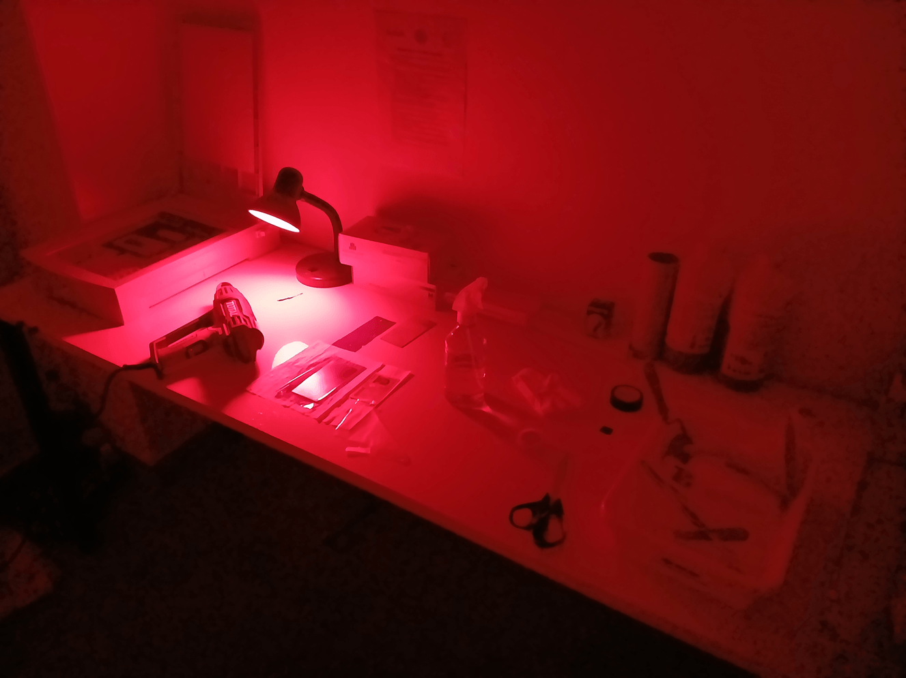
Cuarto oscuro
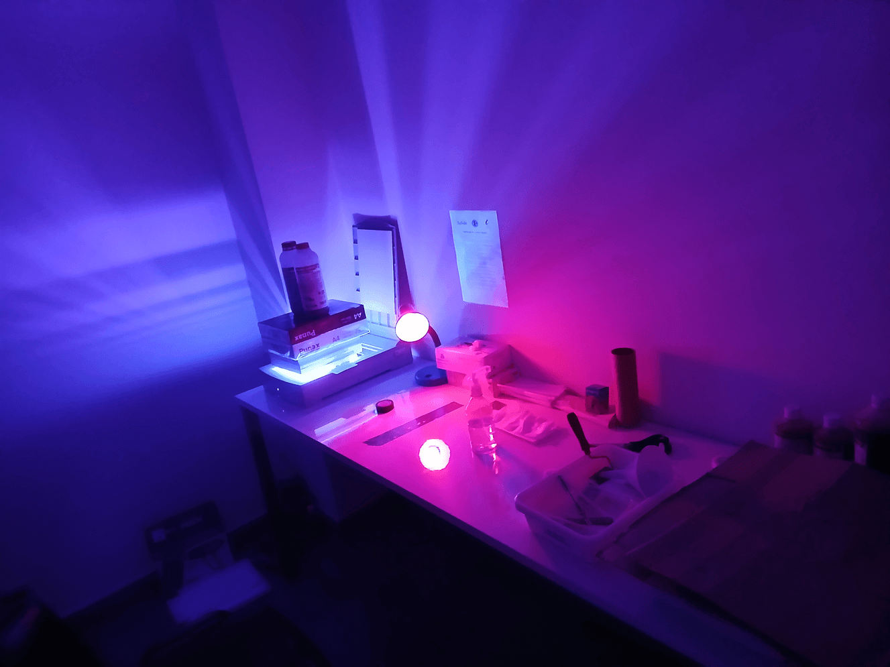
Insolación UV

Revelado químico

Placa lista para percloruro férrico

Retoques finales
Soldadura de componentes
El proceso de soldadura tuvo dos etapas. Primero, los filtros SAW se soldaron usando un horno de reflow LPKF Protoflow S/N2, siguiendo una curva de temperatura previamente establecida.
El resto de los componentes (transistores, resistencias, capacitores e inductores, todos SMD, en su mayoría de tamaño 0603) se soldaron a mano con cautín. La tarea requiere paciencia y pulso: con lupa y pinzas, fuimos colocando cada componente y aplicando la cantidad justa de estaño para dejar soldaduras brillantes y prolijas. Prácticamente no usamos flux, ya que no fue necesario y preferimos mantener la limpieza de las placas. Las soldaduras quedaron apreciablemente limpias y los módulos listos para la siguiente etapa.
Cableado, conexionado y montaje
Para las conexiones internas de los módulos utilizamos cable coaxial RG174, flexible y fácil de maniobrar dentro de las cajas. Para las conexiones externas, que recorren distancias mayores y están más expuestas, usamos RG58, más grueso y mejor aislado.
El armado de los conectores SMA fue un trabajo minucioso: pelar el cable a la medida justa, soldar el conductor central, y luego crimpear la malla con la herramienta adecuada. Cada conexión quedó firme y pareja.
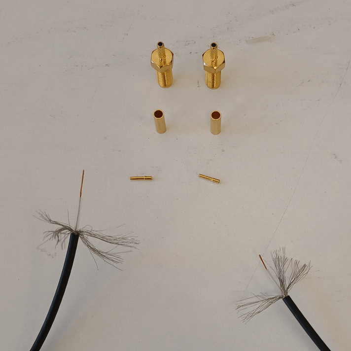
Pelado del cable
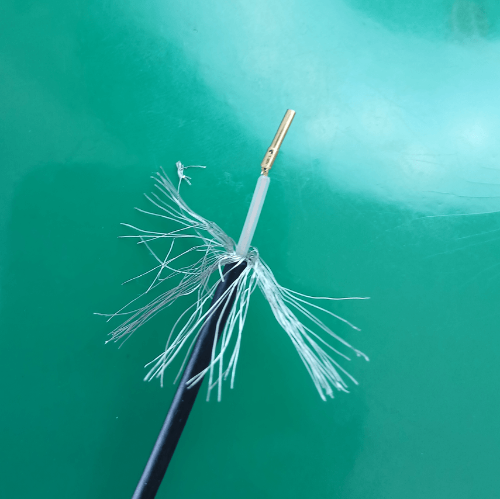
Soldado del conductor central
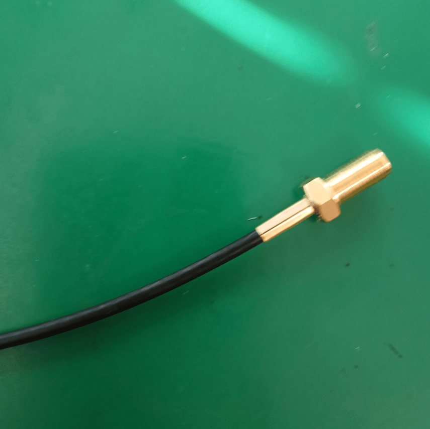
Crimpeado de la malla

Conector terminado
En lugar de usar conectores intermedios, soldamos los cables directamente a las placas. Esto reduce pérdidas y puntos de falla potenciales. Para minimizar la inductancia del blindaje, lo soldamos en varios puntos, quedando efectivamente en paralelo. Pusimos especial atención en evitar cortocircuitos y en revisar que no quedaran hilos sueltos del conductor central ni de la malla (ambos son multifilares y podrían generar problemas a futuro). Cada soldadura se verificó con multímetro antes de avanzar.
Con los cables listos, acondicionamos las cajas de aluminio que alojarían los módulos. Las perforamos para montar los conectores SMA y BNC, y también para colocar los separadores metálicos donde se atornillarían las placas. El armado final quedó prolijo y robusto: una caja con dos LNA y otra con los cuatro PA, con todas las conexiones internas y externas ya en su lugar.
Caracterización experimental
A lo largo del proceso de armado fuimos haciendo mediciones rápidas con el VNA y el analizador de espectro para ir verificando que cada etapa funcionara como debía. Una vez que todo el sistema estuvo montado en las cajas definitivas, pasamos a la caracterización completa.
Setup general y estandarización
Para las mediciones definitivas estandarizamos todo el sistema: nombramos cada puerto de cada caja de manera inequívoca, rotulamos físicamente cada conexión, y acordamos una nomenclatura clara para guardar los archivos. Esto permitió que todo el proceso fuera prolijo, trazable, y que pudiéramos interpretar cada medición sin ambigüedades.
El procedimiento fue el mismo para todas las mediciones:
- Potencia de entrada baja (-45 / -60 / -100 dBm según el caso) y frecuencia central en 436.5 MHz.
- Alimentación de cada caja con las fuentes definitivas de 6 y 5 V respectivamente.
- Cargas de 50 ohm en todos los puertos no utilizados.
Medición de parámetros S (VNA)
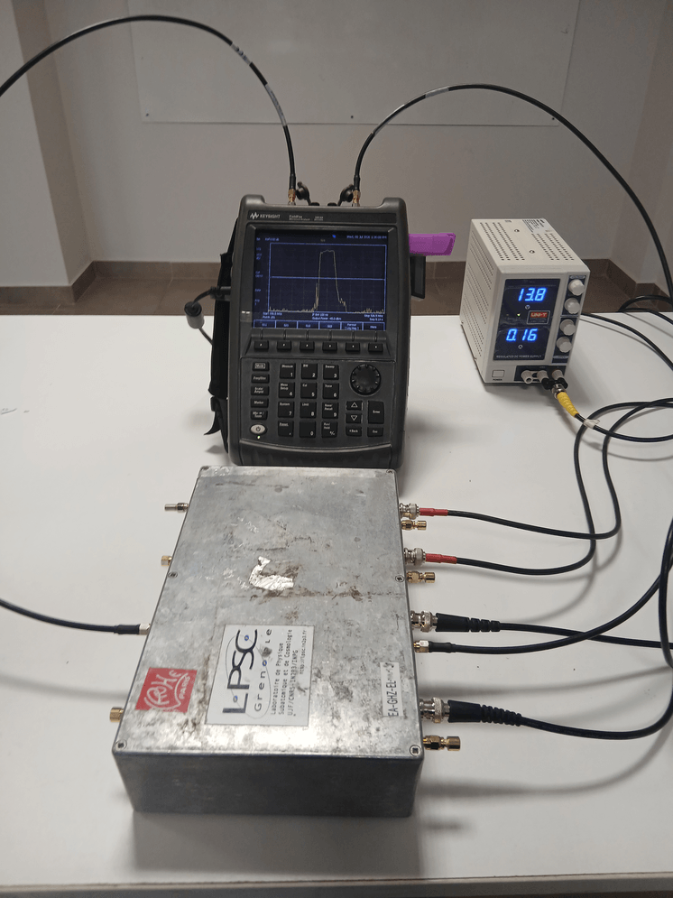
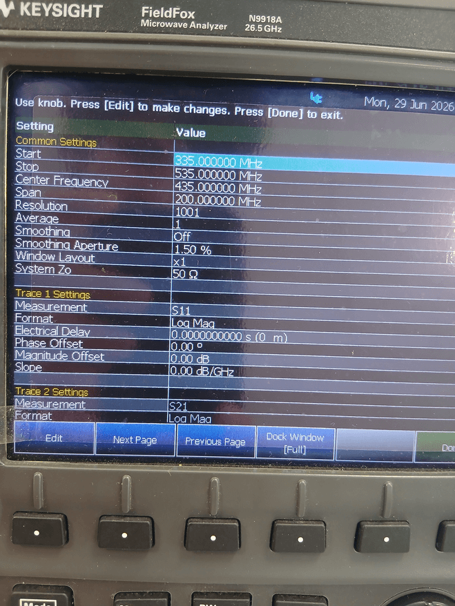
Con el VNA medimos los parámetros S de cada módulo, caracterizando el comportamiento lineal de los amplificadores. Para cada conexión guardamos un archivo .s2p. Esto nos permitió ver, de un vistazo, si la ganancia era la esperada y si la adaptación de impedancias estaba dentro de los márgenes.
Los amplificadores presentaron ganancias cercanas a los 40 dB en la frecuencia de trabajo, con adaptación y aislamiento dentro de lo esperado. Verificamos que el rango de frecuencia de amplificación estuviera alineado con la frecuencia del filtro SAW, y recorrimos todo el rango fuera de banda para detectar posibles resonancias parásitas, oscilaciones espurias o cualquier comportamiento que pudiera indicar algún problema.
Tener el barrido completo de cada módulo documentado en los .s2p nos dio una base sólida para después contrastar con las mediciones no lineales del analizador de espectro.
Medición con analizador de espectro
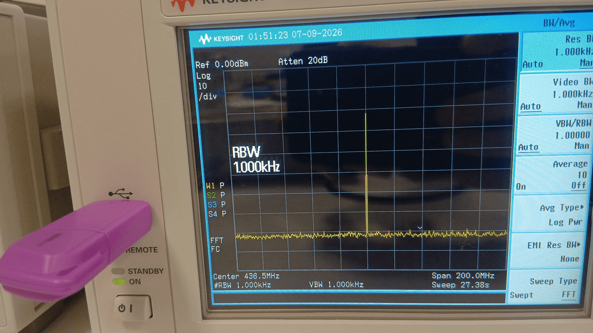
Con el analizador de espectro y un generador de señales, verificamos el espectro completo de cada circuito. Partimos con un filtro de resolución ancho para tener una vista general, y luego lo ajustamos a 1 kHz (el mínimo del equipo) para la medición definitiva.
Fue en esta etapa donde más internalicé la importancia del criterio en las mediciones. No se trata de medir todo lo que se pueda, sino de entender qué vale la pena medir. Aprender a ajustar el filtro y el span para equilibrar entre velocidad y precisión, priorizar las combinaciones que realmente pueden aportar información y guardar las mediciones y anotaciones relevantes para no abrumar con datos inútiles. La disciplina de cuestionarme si lo que hago aporta o es inercia es lo que más me llevo de esta etapa.
Puntos de compresión e intersección del tercer orden
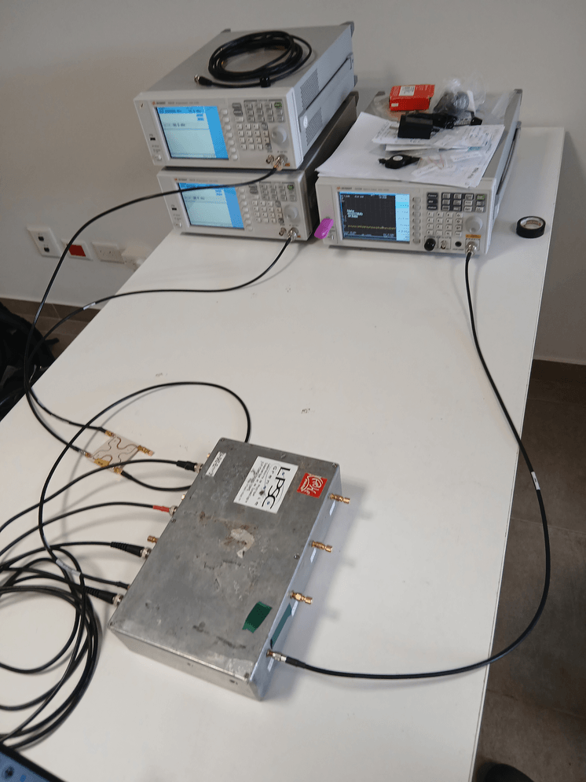
Para caracterizar la no linealidad de los amplificadores, realizamos dos tipos de mediciones: el punto de compresión de 1 dB (P1dB) y el punto de intersección del tercer orden (IP3). En ambos casos modificamos el span y el filtro de resolución del analizador según lo requiriera cada prueba, y utilizamos hojas de cálculo para procesar los datos en tiempo real.
Para el P1dB, fuimos incrementando manualmente la potencia del generador de señales y registrando los valores pico en el analizador. Con una tabla en Google Sheets, la ganancia se calculaba automáticamente y podíamos ver en el momento cuándo caía 1 dB respecto al valor inicial.
Para el IP3, inyectamos dos señales desplazadas ±1.5 MHz de la frecuencia central (435 MHz y 438 MHz), y medimos los espurios de tercer orden que aparecían en 432 MHz y 441 MHz. Usamos dos generadores de señales, los combinamos con un acoplador, y fuimos aumentando la potencia desde un nivel bajo hasta identificar claramente los espurios. Para cada nivel medimos cuatro valores: la potencia de los dos tonos fundamentales y la potencia de los dos espurios.
Con los datos cargados en Google Sheets, calculamos pendiente y ordenada al origen, y proyectamos el punto de cruce.
Puntos de compresión

Intersección del tercer orden
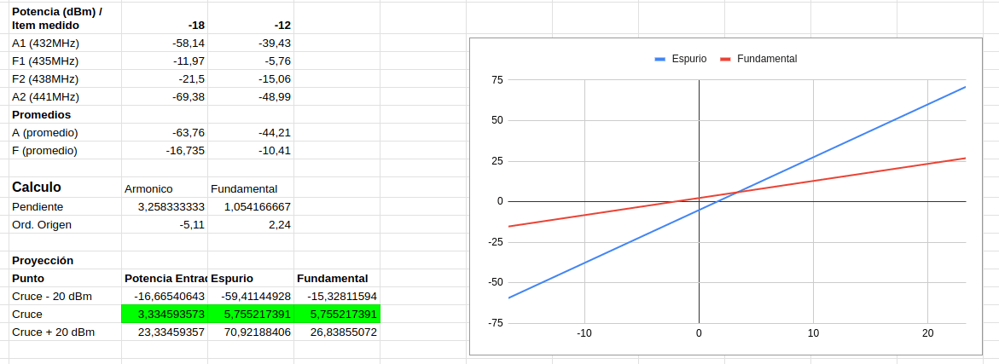
Montaje final y aprendizajes
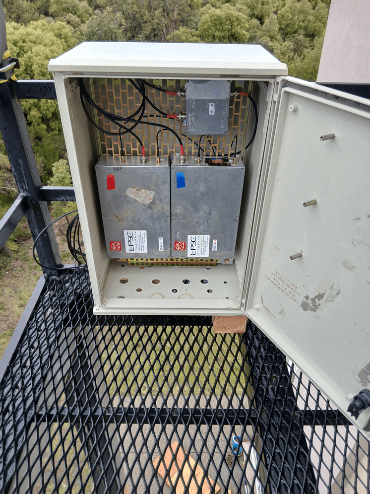
Con todos los módulos caracterizados y verificados, los montamos en la caja exterior definitiva. Todo el sistema quedó integrado en un solo gabinete, listo para su instalación en la estación terrena.
El proceso completo de esta práctica profesional me dejó un aprendizaje transversal que aplica a todas las etapas, desde la soldadura hasta las mediciones: tener criterio para decidir qué hacer y, más importante aún, qué no hacer.
En las soldaduras, aprender hasta dónde limpiar y perfeccionar, y cuándo dar por buena una unión. En las mediciones, saber qué parámetros valía la pena medir, qué combinaciones aportaban información real, y cuáles eran solo ruido. En la documentación, anotar solo lo relevante sin llenar páginas de datos inútiles.
Es muy fácil ponerse a hacer cosas que parecen útiles pero no lo son. Perder horas midiendo combinaciones irrelevantes, o rehaciendo soldaduras que ya estaban bien, o documentando en detalle información que no aporta nada. El verdadero oficio está en saber cuándo parar, qué vale la pena hacer y qué es pérdida de tiempo. Entender eso, creo, es lo que distingue a alguien que produce rápido y bien de alguien que se pierde en los detalles que no importan.